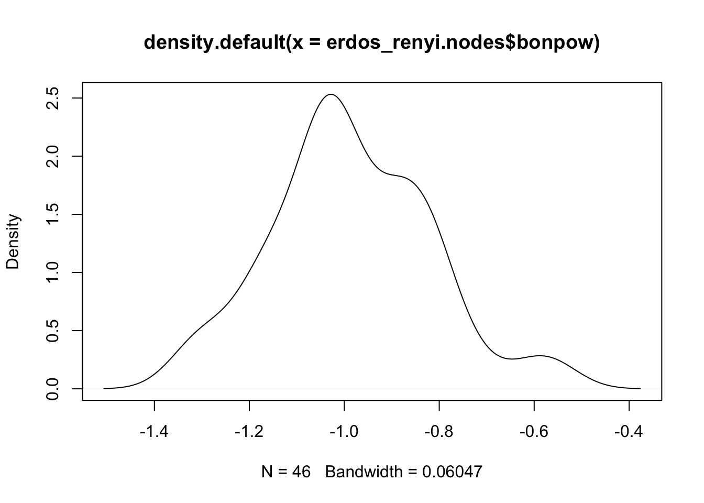

Rows: 46 Columns: 49
── Column specification ────────────────────────────────────────────────────────
Delimiter: ","
chr (3): Current house, Former house, Name
dbl (46): Lysa Arryn, Petyr Baelish, Joffrey Baratheon, Margaery Tyrell, Ren...
ℹ Use `spec()` to retrieve the full column specification for this data.
ℹ Specify the column types or set `show_col_types = FALSE` to quiet this message.
This network has 1189 edges and 46 vertices. Its vertex attribute is “name” and edge attribute is “weight”. This is a directed network that is not bipartite and is weighted. The dyad census indicated that there are 554 mutual, 35 asymmetric, and 446 null relationships.
Code
# number of componentsigraph::components(got_like_dislike.ig)$no
[1] 1
Code
# size of componentsigraph::components(got_like_dislike.ig)$csize
[1] 46
This network has one major component and that component has 46 nodes.
Making a new dataframe nodes with the in-degree, out-degree, and total degree values:
#add eigenvector centrality to node measuresgot_like_dislike.nodes$eigen<-evcent(got_like_dislike.ig)$vector#arrange descending and return top 5 nodesarrange(got_like_dislike.nodes, desc(eigen)) %>%slice(1:5)
name totdegree indegree outdegree eigen
Robb Stark Robb Stark 74 37 37 1.0000000
Pyat Pree Pyat Pree 6 3 3 0.9305896
Stannis Baratheon Stannis Baratheon 66 33 33 0.9197787
Viserys Targaryen Viserys Targaryen 42 21 21 0.9161455
Eddard Stark Eddard Stark 56 27 29 0.8969999
Similarly, calculating the Bonacich power centrality and adding them to the nodes dataframe:
Code
# calculating bonacich power centrality for nodeshead(power_centrality(got_like_dislike.ig))
# add bonachic power centrality to node measuresgot_like_dislike.nodes$bonpow<-power_centrality(got_like_dislike.ig)# arrange descending and return top 5 nodesarrange(got_like_dislike.nodes, desc(bonpow)) %>%slice(1:5)
#add eigenvector centrality to node measureserdos_renyi.nodes$eigen<-evcent(erdos_renyi.ig)$vector#arrange descending and return top 5 nodesarrange(erdos_renyi.nodes, desc(eigen)) %>%slice(1:5)
# add bonachic power centrality to node measureserdos_renyi.nodes$bonpow<-power_centrality(erdos_renyi.ig)# arrange descending and return top 5 nodesarrange(erdos_renyi.nodes, desc(bonpow)) %>%slice(1:5)
# distribution of bonacich power centrality density scoresplot(density(erdos_renyi.nodes$bonpow))

Comparing the density distribution of eigenvector centrality scores in the like-dislike network and the random network, there’s a right skew in the like-dislike network while the scores are normally distributed in the random network. As for the Bonacich power centrality scores, they are similarly distributed in both networks.
Source Code
---title: "Week 4 Challenge"author: "Ananya Pujary"description: "Centrality of a Network"date: "03/28/2023"format: html: toc: true code-fold: true code-copy: true code-tools: true# editor: visualcategories: - challenge_4 - Ananya Pujary # - railroads # - faostat # - wildbirds---```{r}#| label: setup#| include: falselibrary(igraph)library(network)library(readr)library(dplyr)```## Describe the Network DataI've chosen to work with the `got_like_dislike.csv` dataset. ```{r}got_like_dislike <-read_csv("../posts/_data/got/got_like_dislike.csv")got_like_dislikegot_like_dislike.ig <-graph_from_adjacency_matrix(as.matrix(got_like_dislike[ , -c(1:3)]), mode ='directed', weighted =TRUE)``````{r}# number of edgesecount(got_like_dislike.ig)# number of verticesvcount(got_like_dislike.ig)# vertex and edge attributesvertex_attr_names(got_like_dislike.ig)edge_attr_names(got_like_dislike.ig)# network featuresis_directed(got_like_dislike.ig)is_bipartite(got_like_dislike.ig)is_weighted(got_like_dislike.ig)# dyad censusigraph::dyad.census(got_like_dislike.ig)# triad censustriad_census(got_like_dislike.ig)```This network has 1189 edges and 46 vertices. Its vertex attribute is "name" and edge attribute is "weight". This is a directed network that is not bipartite and is weighted. The dyad census indicated that there are 554 mutual, 35 asymmetric, and 446 null relationships.```{r}# number of componentsigraph::components(got_like_dislike.ig)$no# size of componentsigraph::components(got_like_dislike.ig)$csize ```This network has one major component and that component has 46 nodes.Making a new dataframe `nodes` with the in-degree, out-degree, and total degree values:```{r}got_like_dislike.nodes<-data.frame(name=V(got_like_dislike.ig)$name,totdegree=igraph::degree(got_like_dislike.ig, loops=FALSE),indegree=igraph::degree(got_like_dislike.ig, mode="in", loops=FALSE),outdegree=igraph::degree(got_like_dislike.ig, mode="out", loops=FALSE))head(got_like_dislike.nodes)```## CentralityFirst, I'm calculating the eigenvector centrality of each node and adding them to the `got_like_dislike.nodes` dataframe:```{r}# calculating eigenvector centrality scorestemp<-centr_eigen(got_like_dislike.ig,directed=T)names(temp)length(temp$vector)head(temp$vector)temp$centralization#add eigenvector centrality to node measuresgot_like_dislike.nodes$eigen<-evcent(got_like_dislike.ig)$vector#arrange descending and return top 5 nodesarrange(got_like_dislike.nodes, desc(eigen)) %>%slice(1:5)```Similarly, calculating the Bonacich power centrality and adding them to the nodes dataframe:```{r}# calculating bonacich power centrality for nodeshead(power_centrality(got_like_dislike.ig))# add bonachic power centrality to node measuresgot_like_dislike.nodes$bonpow<-power_centrality(got_like_dislike.ig)# arrange descending and return top 5 nodesarrange(got_like_dislike.nodes, desc(bonpow)) %>%slice(1:5)```Calculating the distribution of both centrality measure values:```{r}# distribution of eigenvector centrality scoreshist(table(got_like_dislike.nodes$eigen))plot(density(got_like_dislike.nodes$eigen))# distribution of bonacich power centrality scoreshist(table(got_like_dislike.nodes$bonpow))plot(density(got_like_dislike.nodes$bonpow))```Both measures have a similar distribution of values.# Random Network ComparisonGenerating a random network with the same number of edges (1189) and vertices (46):```{r}erdos_renyi.ig <-sample_gnm(46, 1189, directed =TRUE, loops =FALSE)# density of random networkgraph.density(erdos_renyi.ig)# dyad census of random networkigraph::dyad.census(erdos_renyi.ig)# triad census of random networkigraph::triad.census(erdos_renyi.ig)```Creating a nodes dataframe for this network with total degree, in-degree, and out-degree values:```{r}erdos_renyi.nodes<-data.frame(degree=igraph::degree(erdos_renyi.ig))erdos_renyi.nodes<-erdos_renyi.nodes %>%mutate(indegree=igraph::degree(erdos_renyi.ig, mode="in", loops=FALSE),outdegree=igraph::degree(erdos_renyi.ig, mode="out", loops=FALSE))head(erdos_renyi.nodes)```First, I'm calculating the eigenvector centrality of each node and adding them to the `got_like_dislike.nodes` dataframe:```{r}# calculating eigenvector centrality scorestemp<-centr_eigen(erdos_renyi.ig,directed=T)names(temp)length(temp$vector)head(temp$vector)temp$centralization#add eigenvector centrality to node measureserdos_renyi.nodes$eigen<-evcent(erdos_renyi.ig)$vector#arrange descending and return top 5 nodesarrange(erdos_renyi.nodes, desc(eigen)) %>%slice(1:5)```Similarly, calculating the Bonacich power centrality and adding them to the nodes dataframe:```{r}# calculating bonacich power centrality for nodeshead(power_centrality(erdos_renyi.ig))# add bonachic power centrality to node measureserdos_renyi.nodes$bonpow<-power_centrality(erdos_renyi.ig)# arrange descending and return top 5 nodesarrange(erdos_renyi.nodes, desc(bonpow)) %>%slice(1:5)```Calculating the distribution of both centrality measure values:```{r}table(erdos_renyi.nodes$eigen)# distribution of eigenvector centrality density scoresplot(density(erdos_renyi.nodes$eigen))table(erdos_renyi.nodes$bonpow)# distribution of bonacich power centrality density scoresplot(density(erdos_renyi.nodes$bonpow))```Comparing the density distribution of eigenvector centrality scores in the like-dislike network and the random network, there's a right skew in the like-dislike network while the scores are normally distributed in the random network. As for the Bonacich power centrality scores, they are similarly distributed in both networks.